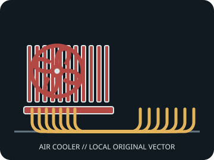

[ INDIVIDUAL COMPONENT // AIR CPU COOLING ]
Cooler Master Hyper 212 Black Edition
Single-tower direct-contact cooler with one 120 mm PWM fan; this record identifies the LGA1700-era Black Edition revision.

IDENTIFICATION: Match the model/SKU, revision, and supplied bracket. Dimensions and socket coverage can vary by package or region; verify the included hardware and current manufacturer documentation before installation.
Dimensions, fit, and manufacturer specifications
| Exact model / SKU | RR-212S-20PK-R2 |
|---|---|
| Overall dimensions | 123 × 77 × 158.8 mm (L × W × H). |
| Installed height / case clearance | 158.8 mm. |
| Supplied fan(s) | 1 × 120 × 120 × 25 mm PWM fan; 800–2,000 rpm ±10%. |
| Noise / airflow (manufacturer figures) | Fan rating: 6.5–26 dB(A), maximum airflow 42 CFM. |
| Heat pipes | Four direct-contact copper heat pipes. |
| Socket bracket compatibility | Intel LGA 1700 / 1200 / 115x; AMD AM5 / AM4. Mount availability can vary by RR-212S revision; confirm the product number and included bracket. |
| RAM / motherboard clearance | The single-tower form leaves DIMM-side space, but the front fan can overlap tall memory. Verify board layout and any required fan lift; check the case for at least 158.8 mm cooler height. |
Cooler height is not a complete fit check: account for fan lift, side-panel clearance, motherboard heatsinks, DIMM position, and any case tolerance.
Installation and service notes
- Install only with the model-specific manual and retention hardware for the selected CPU socket. Confirm orientation and bracket standoff before tightening.
- Apply thermal interface material as directed by the cooler maker. Tighten evenly, connect PWM leads to suitable headers, and verify fan tachometer operation.
- Disconnect power and restrain fan blades during cleaning. Check for fin damage, cable contact, or loosened fasteners during service.
Manufacturer sources
- Cooler Master — Hyper 212 Black Edition with LGA1700Manufacturer product dimensions, fan ratings, and LGA1700-era model identification.
- Cooler Master — Hyper 212 Black Edition legacy product pageManufacturer product/support page for the matching cooler revision and installation resources.
Static reference only. Manufacturers can change regional SKUs, bracket bundles, product specifications, and support documents; check the documentation for the exact unit.